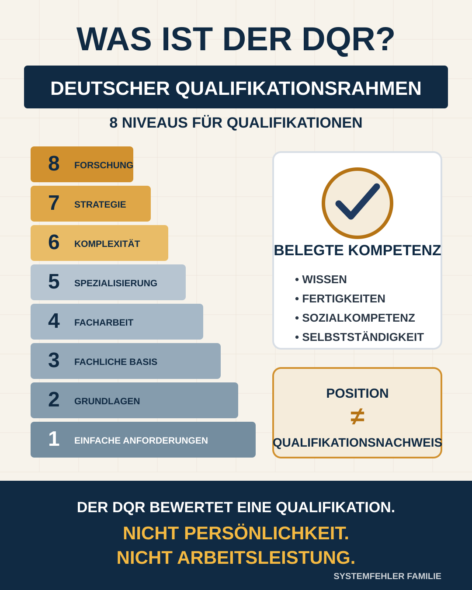

Das Ergebnis vorweg
Bei einzelnen Personen ist eine fachlich einschlägige Grundqualifikation öffentlich oder anhand vorliegender Unterlagen dokumentiert. Bei anderen sind nur die Funktion, ein Verwaltungsweg oder Berufserfahrung sichtbar. Mehrere formale Abschlüsse werden öffentlich gar nicht genannt. Daraus folgt weder „geeignet“ noch „ungeeignet“. Es folgt eine berechtigte Frage an die verantwortlichen Institutionen: Nach welchen überprüfbaren Kriterien wurden die Positionen besetzt und wie wird Eignung im Arbeitsalltag fortlaufend gesichert?
Keine Vorverurteilung, keine Ferndiagnose
Dieser Beitrag bewertet weder den menschlichen Wert noch die Persönlichkeit einer genannten Person. Er behauptet auch nicht, jemand arbeite schlecht oder sei für eine Aufgabe ungeeignet. Verglichen werden ausschließlich öffentlich genannte Funktionen, dokumentierte Abschlüsse beziehungsweise Erfahrungen und die Anforderungen der jeweiligen Rolle.
„Nicht öffentlich bewertbar“ bedeutet nur: Der Redaktion liegt kein belastbarer öffentlicher Nachweis vor. Die erforderlichen Unterlagen können dem Arbeitgeber oder der Aufsicht intern vollständig vorliegen.
Was ist der DQR?
Der Deutsche Qualifikationsrahmen, kurz DQR, ordnet Qualifikationen des deutschen Bildungssystems acht Niveaus zu. Er beschreibt, welche Anforderungen und Lernergebnisse mit einem Abschluss verbunden sind. Betrachtet werden Wissen, Fertigkeiten, Sozialkompetenz und Selbstständigkeit. Je höher das Niveau, desto komplexer und selbstständiger sind die Anforderungen, die mit der jeweiligen Qualifikation verbunden sind.
Für diese Analyse ist vor allem Niveau 6 relevant. Dazu gehören Bachelor- und Diplom-(FH)-Abschlüsse. Auch bestimmte berufliche Fortbildungsabschlüsse wie staatlich anerkannte Erzieherinnen und Erzieher oder Heilerziehungspflegerinnen und Heilerziehungspfleger sind Niveau 6 zugeordnet. Das macht sie gleichwertig im Anforderungsniveau, aber nicht gleichartig: Ein pädagogischer Fachschulabschluss und ein juristischer oder sozialpädagogischer Hochschulabschluss vermitteln unterschiedliche Fachprofile und sind nicht beliebig austauschbar.
Eine Stellenbezeichnung wie „Bereichsleitung“, „Fachdienst“ oder „Sachgebietsleitung“ besitzt selbst kein DQR-Niveau. Entscheidend ist der tatsächlich erworbene Abschluss. Der DQR verleiht außerdem keine neue Berufsberechtigung und entscheidet nicht, wer eine konkrete Stelle besetzen darf.
Der Begriff „personale Kompetenz“ im DQR darf nicht missverstanden werden. Er beschreibt Lernergebnisse, die mit einer Qualifikation verbunden sind. Der DQR testet nicht den Charakter eines einzelnen Menschen, nicht seine Empathie in einer konkreten Situation und nicht die Qualität seiner tatsächlichen Arbeit.

Fünf Ebenen, die nicht verwechselt werden dürfen
- Position: Welche Verantwortung ist einer Person organisatorisch übertragen?
- Formale Qualifikation: Welcher Berufs- oder Studienabschluss ist tatsächlich nachgewiesen?
- Fachliche Passung: Passt dieser Abschluss inhaltlich zur konkreten Aufgabe?
- Zusatzkompetenz und Erfahrung: Liegen etwa Kinderschutz-, Leitungs-, Trauma-, Beteiligungs-, Datenschutz- oder Verfahrenskenntnisse vor?
- Persönliche Eignung und Arbeitsleistung: Wie handelt die Person tatsächlich, wie reflektiert sie Fehler und wie werden Ergebnisse kontrolliert?
Nur die ersten vier Ebenen lassen sich teilweise aus Abschlüssen, Funktionsbeschreibungen und Fortbildungsnachweisen ableiten. Die fünfte Ebene erfordert Beobachtung, Akten- und Qualitätsprüfung, Rückmeldungen von Kindern und Familien, Supervision, Beschwerdeauswertung und eine faire dienstliche Beurteilung. Eine Zahl im DQR kann das nicht leisten.
Was das SGB VIII verlangt
§ 72 SGB VIII
Jugendämter sollen Personen einsetzen, die sich für die jeweilige Aufgabe persönlich eignen und eine passende Ausbildung oder besondere Erfahrung in der sozialen Arbeit besitzen. Leitungsfunktionen sollen in der Regel Fachkräften übertragen werden. Fortbildung und Praxisberatung sind sicherzustellen.
§ 45 SGB VIII
Eine erlaubnispflichtige Einrichtung muss konzeptgerechte fachliche und personelle Voraussetzungen gewährleisten. Der Träger muss sicherstellen, dass aufgabenspezifische Ausbildungsnachweise und Führungszeugnisse geprüft werden.
§ 79a SGB VIII
Der öffentliche Jugendhilfeträger muss Qualitätsmaßstäbe und geeignete Sicherungsmaßnahmen entwickeln, anwenden und regelmäßig überprüfen – auch für die Zusammenarbeit mit anderen Institutionen.
Wie diese Tabelle entstanden ist
Ausgewertet wurden offizielle Funktions- und Kontaktseiten des Landkreises Tirschenreuth und des SOS-Kinderdorfs, offizielle Stellenanzeigen, veröffentlichte berufliche Profile sowie konkrete Unterlagen aus dem betroffenen Verfahren. Eine DQR-Stufe wird nur genannt, wenn ein konkreter Abschluss öffentlich benannt oder in einer vorliegenden Unterlage ausgewiesen ist und dieser Abschluss offiziell zugeordnet werden kann.
Die Tabelle ist eine Belegstand-Tabelle, kein Personenranking. Alter, Privatleben, Sympathie und unbestätigte Gerüchte spielen keine Rolle. Personen außerhalb der beiden angesprochenen Institutionen wurden nicht aufgenommen, weil für sie andere gesetzliche Eignungsmaßstäbe gelten.
Position versus belegte Kompetenz
Leseschlüssel: Die Farben bewerten den Stand der öffentlich zugänglichen Nachweise – nicht die Person und nicht ihre tatsächliche Arbeitsleistung.
| Person | Dokumentierte Position | Dokumentierte Qualifikation / DQR | Sachliche Einordnung | Was für eine belastbare Prüfung noch offengelegt werden sollte |
|---|---|---|---|---|
| Kreisjugendamt und zuständige Verwaltungsebene des Landkreises Tirschenreuth | ||||
| Helen Küspert | Allgemeiner Sozialdienst; auf der Landkreis-Seite als Ansprechpartnerin für Immenreuth, Kastl und Kemnath genannt. | Sozialpädagogin (B.A.) laut einem der Redaktion vorliegenden behördlichen Schreiben vom 13.11.2025. Bachelor: DQR 6. | Kernbezug dokumentiert Der sozialpädagogische Bachelor ist inhaltlich einschlägig für eine ASD-Tätigkeit. Daraus folgt kein Urteil über die Qualität der konkreten Fallarbeit oder die persönliche Eignung. |
Staatliche Anerkennung, aufgabenbezogene Fortbildungen, Kinderschutz- und Verfahrenskompetenz, Supervision, Praxisberatung und Kriterien der Fallqualitätsprüfung. |
| Christina Schindler | Fachstelle Eingliederungshilfe nach § 35a SGB VIII; unter anderem für Immenreuth und Kemnath zuständig. | Auf den ausgewerteten offiziellen Seiten wird kein konkreter Berufs- oder Studienabschluss genannt. Daher keine seriöse DQR-Zuordnung. | öffentlich nicht bewertbar Die Funktion ist dokumentiert, die formale Passung anhand öffentlicher Angaben jedoch nicht. Das ist kein Beleg für eine fehlende Qualifikation. |
Grundqualifikation sowie Zusatzkenntnisse zu § 35a, Teilhabeplanung, seelischer Behinderung, interdisziplinärer Zusammenarbeit, Beteiligung und Verwaltungsverfahren. |
| Karin Kunz | Wirtschaftliche Jugendhilfe; stationäre Unterbringung und Eingliederungshilfe in Einrichtungen. | Auf den ausgewerteten offiziellen Seiten wird kein konkreter Abschluss genannt. Keine seriöse DQR-Zuordnung möglich. | öffentlich nicht bewertbar Für diese verwaltungsbezogene Aufgabe ist nicht automatisch ein pädagogischer Abschluss erforderlich. Entscheidend wären eine passende Verwaltungs- oder Sozialrechtsqualifikation und aktuelle Fachkenntnisse. |
Verwaltungs- beziehungsweise Sozialrechtsqualifikation, Fortbildungen zu SGB VIII, Entgelt- und Kostenrecht, stationären Hilfen, Bescheiden und Beschwerdebearbeitung. |
| Sabine Konrad | Sachgebietsleitung des Kreisjugendamts; Fachbereichsleitung Verwaltung und Fachaufsicht für Kindertageseinrichtungen und Kindertagespflege. | Öffentlich dokumentiert sind der Beginn einer Ausbildung als Verwaltungsinspektorenanwärterin 2013, Tätigkeit in der Jugendamtsverwaltung seit 2016 und Leitungsverantwortung seit 2019. Der genaue Abschluss wird nicht benannt; daher keine sichere DQR-Zahl. | Teilaspekte dokumentiert Eine langjährige verwaltungsfachliche Laufbahn im Jugendamt ist belegt. Ob und wie das Fachkräftegebot für die gesamte Leitungsfunktion erfüllt und durch sozialpädagogische Fachverantwortung ergänzt wird, lässt sich aus der Kurzbiografie allein nicht beantworten. |
Exakter Abschluss, Leitungs- und Jugendhilfequalifikationen, Zuordnung von Verwaltungs- und sozialpädagogischer Fachaufsicht, Fortbildung, Praxisberatung und Umsetzung von § 72 Abs. 2 SGB VIII. |
| Ayla Spiegler | Leitung der Abteilung 3 mit Sicherheit und Ordnung, Ausländeramt, Sozialwesen und Kreisjugendamt. | Vom Landkreis als Juristin mit Studium in Regensburg vorgestellt. Der konkrete Abschluss wird in der Veröffentlichung nicht bezeichnet; deshalb wird keine DQR-Stufe behauptet. | Teilaspekte dokumentiert Juristische Kompetenz ist für Rechts- und Verwaltungsaufsicht relevant. Sie belegt für sich allein keine sozialpädagogische oder kinderschutzspezifische Fachkompetenz. Wegen des breiten Ressortzuschnitts kommt es auf Aufgabenverteilung und ergänzende Fachverantwortung an. |
Genauer Abschluss, jugendhilferechtliche und kinderschutzbezogene Zusatzqualifikation, Leitungsfortbildung sowie klare Abgrenzung zwischen Rechts-, Dienst- und sozialpädagogischer Fachaufsicht. |
| Verena Kohl | Im offiziellen Ansprechpartnerverzeichnis dem Kreisjugendamt zugeordnet; eine konkrete Aufgabe wird dort nicht genannt. | Kein konkreter Abschluss öffentlich ausgewiesen. Keine seriöse DQR-Zuordnung möglich. | öffentlich nicht bewertbar Ohne genaue Funktion und Qualifikation wäre jede Eignungsbehauptung Spekulation. |
Konkretes Aufgabenprofil, erforderliche und vorhandene Grundqualifikation, eventuelle Zusatzqualifikationen, Verantwortungsumfang und Qualitätssicherung. |
| SOS-Kinderdorf Oberpfalz in Immenreuth | ||||
| Holger Hassel | Einrichtungsleitung. | Nach eigenem Berufsprofil Diplom-Sozialpädagoge (FH), Supervisor und DGSv-Mitglied; außerdem Erfahrung in ambulanter und stationärer Jugendhilfe sowie als Führungskraft. Diplom (FH): DQR 6. | Kernbezug dokumentiert Eine einschlägige pädagogische Grundqualifikation und leitungsbezogene Erfahrung sind öffentlich nachvollziehbar. Ob Leitung, Aufsicht und Beschwerdebearbeitung im Einzelfall gut funktionieren, ist eine davon getrennte Leistungs- und Qualitätsfrage. |
Aktuelle Fortbildungen zu Kinderschutz, Beteiligung, Beschwerde, Datenschutz und Organisationsverantwortung sowie Ergebnisse interner und externer Qualitätsprüfungen. |
| Karina Ziegler | Bereichsleitung Kinderdorffamilien und Arche Noah. | Öffentlich dokumentiert sind zehn Jahre Tätigkeit als Jugendsozialarbeiterin an einer Schule. Der konkrete Berufs- oder Studienabschluss wird in den ausgewerteten Quellen nicht genannt; keine sichere DQR-Zuordnung. | Teilaspekte dokumentiert Langjährige einschlägige Felderfahrung ist belegt. Der formale Abschluss und spezifische Leitungskompetenzen für stationäre Hilfen bleiben öffentlich offen. |
Genauer Abschluss, Leitungsqualifikation, Erfahrung in stationärer Hilfe, Hilfeplanung, Herkunftsfamilienarbeit, Kinderrechte, Kinderschutz, Datenschutz und Beschwerdemanagement. |
| David Krefft | Bereichsleitung Regenbogenhaus, Heilpädagogische Tagesgruppe und Kinderdorffamilien. | Auf den offiziellen Kontakt- und Angebotsseiten wird kein konkreter Berufs- oder Studienabschluss genannt. Keine seriöse DQR-Zuordnung. | öffentlich nicht bewertbar Die Position ist klar dokumentiert, die formale Passung anhand öffentlicher Angaben aber nicht. Daraus folgt keine Aussage über eine tatsächlich vorhandene Qualifikation. |
Pädagogische Grundqualifikation, Leitungsfortbildung sowie Nachweise zu stationärer Jugendhilfe, Heilpädagogik, Hilfeplanung, Elternarbeit, Schutzkonzept und Ergebnisqualität. |
| Indre Fischer | Bereichsleitung Rappelkiste und Ambulante Maßnahmen. | Auf den offiziellen Kontakt- und Angebotsseiten wird kein konkreter Abschluss genannt. Keine seriöse DQR-Zuordnung. | öffentlich nicht bewertbar Die Leitungsfunktion ist öffentlich, die zugrunde liegende formale Qualifikation nicht. Fehlende Veröffentlichung ist kein Negativbeleg. |
Grundabschluss, Leitungsqualifikation, Feldkenntnisse für teilstationäre und ambulante Hilfen, Kinderschutz, Hilfeplanung, Beteiligung, Fachberatung und Qualitätskontrolle. |
| Stefanie Chavez | In fallbezogenen Unterlagen aus August 2026 als Fachdienst genannt. Auf der aktuellen öffentlichen Leitungsseite des SOS-Kinderdorfs wird sie nicht aufgeführt; eine gegenwärtige SOS-Funktion wird deshalb hier nicht behauptet. | Ein öffentliches Berufsprofil nennt Heilerziehungspflege sowie Heil- und Inklusionspädagogik. Für eine staatlich anerkannte Heilerziehungspflege-Qualifikation gilt DQR 6. Die exakten Abschlussbezeichnungen und Originalnachweise wurden nicht eingesehen; deshalb wird der Person keine abschließende DQR-Stufe zugewiesen. | Teilaspekte dokumentiert Der öffentlich beschriebene Ausbildungsweg hat einen deutlichen pädagogisch-heilpädagogischen Bezug. Ungeklärt bleiben die aktuelle institutionelle Zuordnung und die konkreten Anforderungen der fallbezogen bezeichneten Fachdienstrolle. |
Aktuelle Funktion und Arbeitgeberzuordnung, exakte Abschlussbezeichnungen, fachdienstbezogene Zusatzqualifikation sowie Zuständigkeit für Hilfeplanung, Elternarbeit, Umgangsbegleitung und Dokumentation. |
Was sich aus der Tabelle seriös sagen lässt
Bei Helen Küspert ist ein einschlägiger sozialpädagogischer Hochschulabschluss dokumentiert. Bei Holger Hassel sind ein einschlägiges Diplom (FH), Supervisionsbezug und Führungserfahrung öffentlich beschrieben. Das sind belastbare Hinweise auf eine passende fachliche Grundlage – aber kein Freibrief für jede konkrete Entscheidung.
Bei Sabine Konrad, Ayla Spiegler und Karina Ziegler sind relevante Teile des Profils sichtbar: eine langjährige Verwaltungslaufbahn im Jugendamt, eine juristische Grundlage beziehungsweise langjährige Jugendsozialarbeit. Für eine vollständige Passungsprüfung fehlen in den öffentlichen Kurzangaben jedoch konkrete Abschlussbezeichnungen, Zusatzqualifikationen oder die genaue Verteilung der Fachverantwortung.
Bei Christina Schindler, Karin Kunz, Verena Kohl, David Krefft und Indre Fischer reichen die öffentlich genannten Angaben nicht für eine faire formale Einordnung. Das ist eine Transparenzlücke, keine festgestellte Qualifikationslücke.
Bei Stefanie Chavez weist der öffentlich beschriebene Ausbildungsweg auf einschlägige pädagogische Kompetenz hin. Zugleich ist ihre aktuelle Rolle beim SOS-Kinderdorf öffentlich nicht eindeutig. Deshalb wäre es falsch, aus einer früher oder fallbezogen genannten Position eine gegenwärtige Zuständigkeit abzuleiten.
Der eigentliche Prüfstein: Leistung und Qualitätskontrolle
Selbst ein perfekt passender Abschluss beantwortet nicht, ob ein Kind beteiligt wird, ob Elterninformationen korrekt verarbeitet werden, ob Fristen eingehalten, Beschwerden ernst genommen, Kontakte fachlich begründet gestaltet und Fehler transparent korrigiert werden. Umgekehrt kann langjährige einschlägige Erfahrung eine Person zur Fachkraft machen, auch wenn der öffentliche Internetauftritt ihren Abschluss nicht nennt.
Eine faire Eignungsprüfung braucht deshalb mehr als Lebensläufe. Sie braucht klare Stellenprofile, dokumentierte Einarbeitung, regelmäßige Fortbildung, Supervision und Praxisberatung, nachvollziehbare Fachaufsicht, Auswertung von Beschwerden und eine Qualitätssicherung, die die Sicht von Kindern und Familien einbezieht.
Offener Brief an die Leitung des Kreisjugendamts Tirschenreuth
und die zuständige Abteilungsleitung des Landratsamts Tirschenreuth
sowie an die Einrichtungsleitung des SOS-Kinderdorfs Oberpfalz
in Immenreuth
Sehr geehrte Damen und Herren,
die Öffentlichkeit kann anhand Ihrer Internetseiten erkennen, wer bestimmte Funktionen innehat. In vielen Fällen ist jedoch nicht sichtbar, welche konkrete Qualifikation, Zusatzausbildung und Erfahrung für die jeweilige Position vorausgesetzt und nachgewiesen wurde. Zugleich treffen die genannten Stellen Entscheidungen, die tief in das Leben von Kindern und Familien eingreifen.
Deshalb stellen wir Ihnen die zentrale offene Frage:
Sind für jede Aufgabe die geeigneten Personen eingesetzt?
Und wie weisen Sie diese Eignung nachvollziehbar nach – nicht nur bei der Einstellung, sondern fortlaufend in Leitung, Fallarbeit, Hilfeplanung, Kinderschutz, Beteiligung, Beschwerdebearbeitung und Zusammenarbeit?
Fragen an das Kreisjugendamt Tirschenreuth
- Welche schriftlichen Stellen- und Kompetenzprofile gelten für ASD, § 35a-Fachstelle, Wirtschaftliche Jugendhilfe, Sachgebietsleitung und übergeordnete Abteilungsleitung?
- Welche Grundqualifikation, Berufserfahrung und Zusatzqualifikation ist für jede dieser Funktionen verbindlich vorgesehen?
- Wie wurde und wird die Erfüllung des Fachkräftegebots nach § 72 SGB VIII für die jeweiligen Aufgaben dokumentiert?
- Wie wird bei Leitungsfunktionen § 72 Abs. 2 SGB VIII umgesetzt, und wer trägt die sozialpädagogische Fachverantwortung, wenn eine Leitung primär verwaltungsfachlich oder juristisch qualifiziert ist?
- Welche regelmäßigen Fortbildungen und welche Praxisberatung erhalten Mitarbeitende zu Kinderschutz, Beteiligung, Hilfeplanung, Elternrechten, Umgang, Trauma, Datenschutz und verwaltungsrechtlich korrektem Handeln?
- Nach welchen Kriterien wird persönliche Eignung im Arbeitsalltag überprüft, ohne Persönlichkeit mit einem Bildungsabschluss zu verwechseln?
- Welche Qualitätsindikatoren nach § 79a SGB VIII werden genutzt, wie oft werden sie geprüft und wie fließen Beschwerden sowie Rückmeldungen von Kindern und Familien ein?
- Ist das Jugendamt bereit, eine anonymisierte Qualifikations- und Fortbildungsmatrix nach Funktion zu veröffentlichen, ohne private Zeugnisse einzelner Beschäftigter offenzulegen?
Fragen an das SOS-Kinderdorf Oberpfalz
- Welche verbindlichen Stellenprofile gelten für Einrichtungsleitung, Bereichsleitung, Fachdienst, Gruppenfachkräfte und Mitarbeitende im Anerkennungsjahr?
- Welche aufgabenspezifischen Ausbildungsnachweise und welche Führungszeugnisse werden nach § 45 Abs. 3 SGB VIII geprüft, in welchen Abständen und durch welche verantwortliche Stelle?
- Welche Zusatzqualifikationen verlangt der Träger von Leitungs- und Fachdienstpersonal für stationäre Hilfen, Kinderschutz, Traumapädagogik, Hilfeplanung, Elternarbeit, Umgangsbegleitung, Kinderrechte und Beschwerdemanagement?
- Wie werden Einarbeitung, Supervision, Fortbildung und fachliche Reflexion dokumentiert, und welche Konsequenzen folgen aus festgestellten Qualitätsmängeln?
- Wie wird die tatsächliche Arbeitsqualität gemessen – insbesondere Beteiligung des Kindes, Förderung der Herkunftsfamilienkontakte, Datenschutz, Verlässlichkeit von Absprachen und Bearbeitung von Beschwerden?
- Welche aktuelle Funktion hat Stefanie Chavez im Zusammenhang mit dem SOS-Kinderdorf Oberpfalz, und welche fachlichen Anforderungen gelten für die in den Unterlagen als „Fachdienst“ bezeichnete Rolle?
- Welche konkreten Grundqualifikationen und Leitungsfortbildungen liegen den öffentlich genannten Bereichsleitungen zugrunde?
- Ist das SOS-Kinderdorf bereit, eine anonymisierte Qualifikations-, Fortbildungs- und Aufsichtsmatrix nach Funktion zu veröffentlichen?
Gemeinsame Fragen an beide Institutionen
- Wer prüft an den Schnittstellen zwischen Jugendamt und Einrichtung, ob nicht nur Zuständigkeiten, sondern auch die notwendige Fachkompetenz eindeutig zugeordnet ist?
- Wie werden unterschiedliche fachliche Einschätzungen dokumentiert und überprüft, statt sie durch Hierarchie oder Funktionsbezeichnung zu entscheiden?
- Welche unabhängige Stelle kontrolliert, ob vorhandene Qualifikationen in der Praxis wirksam werden?
- Welche öffentlich nachvollziehbaren Verbesserungen wurden aus Beschwerden, Fehlern oder kritischen Fallverläufen abgeleitet?
Was eine überzeugende Antwort enthalten sollte
Es geht nicht darum, private Zeugnisse ins Internet zu stellen. Eine sachliche institutionelle Antwort kann Datenschutz und Transparenz verbinden. Hilfreich wären anonymisierte Stellenprofile, Mindestqualifikationen, vorhandene Qualifikationsarten, Fortbildungsintervalle, Formen der Supervision und Praxisberatung, Verantwortungswege sowie die Kriterien, mit denen Arbeits- und Ergebnisqualität überprüft werden.
Ebenso wichtig ist die Bereitschaft, unzutreffende Angaben zu korrigieren. Sollten Funktionen oder Qualifikationen in dieser Zusammenstellung unvollständig oder veraltet sein, bitten wir beide Institutionen um belegte Berichtigung. Diese wird transparent ergänzt.
Mit freundlichen Grüßen
Systemfehler Familie
Recht auf Antwort und Gegendarstellung
Das Kreisjugendamt Tirschenreuth, das Landratsamt Tirschenreuth, das SOS-Kinderdorf Oberpfalz und die genannten Personen sind ausdrücklich zur sachlichen Stellungnahme eingeladen. Antworten können auf Wunsch vollständig und ohne sinnentstellende Kürzung veröffentlicht werden. Nachgewiesene Fehler werden sichtbar berichtigt. Bis zu einer Antwort bleiben alle hier bezeichneten Lücken offene Fragen – keine Feststellungen persönlicher Ungeeignetheit.
Öffentlich überprüfbare Quellen
- Deutscher Qualifikationsrahmen – Übersicht der acht Niveaus
- DQR-FAQ – Bedeutung, Grenzen und fehlende Austauschbarkeit gleicher Niveaus
- DQR – Niveau 6
- DQR-Qualifikationssuche – Diplom (FH), Niveau 6
- DQR-Qualifikationssuche – staatlich anerkannte Heilerziehungspflege, Niveau 6
- DQR-Qualifikationssuche – staatlich anerkannte Erzieherinnen und Erzieher, Niveau 6
- § 72 SGB VIII – Mitarbeiter, Fortbildung
- § 45 SGB VIII – Erlaubnis für den Betrieb einer Einrichtung
- § 79a SGB VIII – Qualitätsentwicklung in der Kinder- und Jugendhilfe
- Landkreis Tirschenreuth – Allgemeiner Sozialdienst und Zuständigkeitsgebiete
- Landkreis Tirschenreuth – offizielles Ansprechpartnerverzeichnis
- Landkreis Tirschenreuth – Führungswechsel im Kreisjugendamt
- Landkreis Tirschenreuth – neues Führungsteam und Abteilung 3
- SOS-Kinderdorf Oberpfalz – Einrichtungs- und Bereichsleitungen
- SOS-Kinderdorf Oberpfalz – Zuordnung der Bereiche
- SOS-Kinderdorf – öffentliches Anforderungsprofil für pädagogische Fachkräfte in Immenreuth
- Berufsprofil Holger Hassel – Grundberuf, Feld- und Führungserfahrung
- Gemeinde Speichersdorf – dokumentierte Berufserfahrung von Karina Ziegler, Gemeindebrief 11/2023
- Öffentliches Berufsprofil Stefanie Chavez – genannte Berufsqualifikationen
Nicht öffentlich verlinkt, aber in die Belegprüfung einbezogen: ein behördliches Schreiben des Kreisjugendamts vom 13.11.2025 mit der Berufsbezeichnung „Sozialpädagogin (B.A.)“ sowie fallbezogene Schreiben aus August 2026, in denen Stefanie Chavez als Fachdienst bezeichnet wird.
Kurz erklärt
Bewertet der DQR Persönlichkeit oder Arbeitsleistung?
Nein. Er ordnet Qualifikationen nach den damit verbundenen Lernergebnissen ein. Ob eine Person zuverlässig, empathisch, fehleroffen und in der konkreten Rolle wirksam handelt, muss mit anderen Verfahren geprüft werden.
Bedeutet „kein öffentlicher Nachweis“ automatisch „nicht qualifiziert“?
Nein. Es bedeutet nur, dass Außenstehende die formale Passung anhand der veröffentlichten Angaben nicht prüfen können. Die Nachweise können intern vollständig vorliegen.
Warum werden gleiche DQR-Niveaus nicht gleichgesetzt?
Weil das Niveau die Komplexität der Anforderungen beschreibt, nicht das Fachgebiet. Ein Abschluss auf Niveau 6 in Verwaltung, Pädagogik oder einem anderen Fach vermittelt jeweils andere Kenntnisse und Methoden.
Was sollen die Institutionen veröffentlichen?
Keine privaten Zeugnisse. Ausreichend wäre eine anonymisierte Übersicht je Funktion: Mindestqualifikation, vorhandene Qualifikationsarten, Zusatzfortbildungen, Supervision, Fachaufsicht und Qualitätsprüfung.
Stand: 13. September 2026. Zum Zeitpunkt der Veröffentlichung lag Systemfehler Familie keine Stellungnahme der angesprochenen Stellen zu diesem offenen Brief vor. Der Beitrag wird bei belegten Korrekturen aktualisiert.